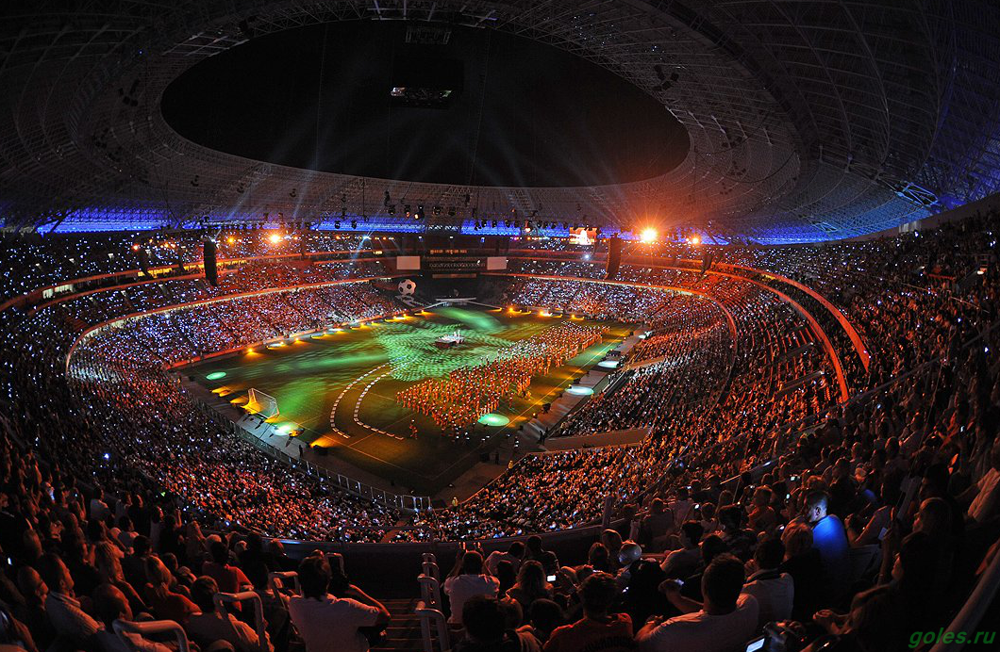
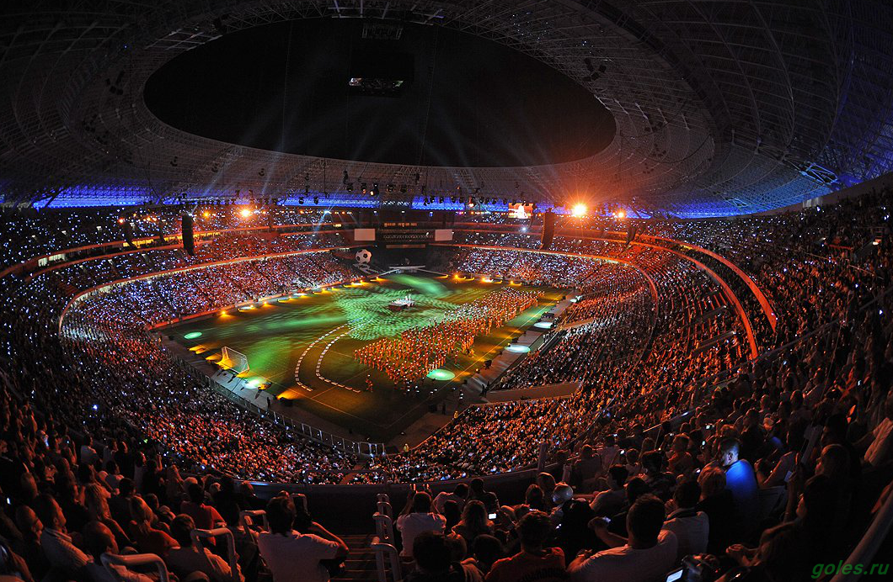
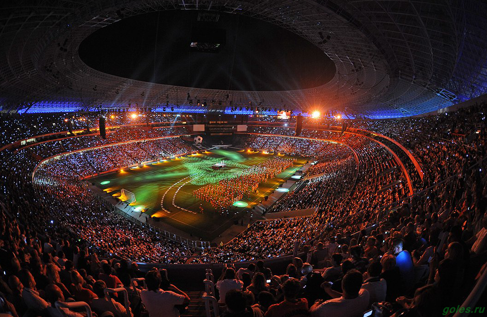

Творческая биография театра началась в 1927 году, тогда основу его труппы составили актеры легендарного «Березоля». Создатели театра - известные режиссеры Украины Василий Василько и Александр Загаров.
Внешне архитектура театра отвечает всем канонам классического древнего искусства. Он напоминает древнегреческий храм, украшенный скульптурой музы трагедии Мельпомены из древнегреческой мифологии (скульптор Ю.И. Балдин).
За значительные достижения в развитии украинского театрального искусства в 2001г. Донецкому областному украинскому музыкально-драматическому театру был присвоен статус академического. В 2009 г. театр получил статус Национального.
Труппа театра состоит из ярких творческих индивидуальностей высокого профессионального уровня. Действующий репертуар театра насчитывает более 40 названий, в нем широко представлена и классическая, и современная драматургия.
Донецкий национальный академический театр оперы и балета им. А. Б. Соловьяненко был создан в 1932 году в г. Луганске на базе Передвижного оперного театра Правобережной Украины. В документах Наркомпроса Украины предлагается с 15 марта 1932 года передать Передвижную оперу в распоряжение Донецкого театрального треста для постоянного обслуживания населения Донбасса.
12 апреля 1941 г. Донецкий музыкальный театр открывает свой сезон в новом театральном здании сооруженном по проекту архитектора Людвига Ивановича Котовского премьерой оперы М. И. Глинки „Иван Сусанин”. Сегодня здание театра является памятником архитектуры. Выполнено оно в классическом стиле, имеет подходы с трех сторон. Зрительный зал и фойе декорированы лепными деталями, скульптурными бюстами композиторов, поэтов, драматургов и декоративными вазами.Уютный зал театра вмещает одновременно 967 человек.
В 1992 году на базе театра была основана школа хореографического мастерства под руководством Народного артиста Украины Вадима Писарева, который является художественным руководителем театра. С 1994 года ежегодно театр проводит Международный фестиваль «Звёзды мирового балета».
За зданием донецкого театра оперы и балета в 2002 году был установлен памятник Анатолию Соловьяненко, в честь которого сейчас и называется театр.
Большой популярностью у детей и их родителей пользуется Донецкий областной театр кукол — один из старейших театров на Украине, cозданный в 1933 году.
Свою историю Донецкий театр кукол начинает с 1930-х гг., когда актерской «группе выходного дня» по решению Сталинского городского совета с 1 декабря 1933 г. был дан статус самостоятельного театра кукол. У его истоков стояли выдающиеся мастера украинской сцены — народный артист СССР Виктор Добровольский и народная артистка Украины Любовь Гаккебуш.
Спектакли Донецкого театра кукол пользуются огромной популярностью не только в Донбассе, но и во многих городах Украины, России, Белоруси, Молдавии, Бельгии, Сербии. В его стенах работает клуб юных любителей театра, участники которого не только смотрят спектакли, но и получают более глубокие знания по театральному искусству.
За свою работу театр награжден Почетной грамотой Президиума Верховного совета Украины, десятками престижных дипломов на международных, всеукраинских, региональных и областных фестивалях. Донецкий театр кукол стал учредителем регионального фестиваля «Лялькові зустрічі», который успешно прошел в 2000, 2002 и 2004 годах с участием ведущих театров кукол и театральных критиков Украины и стран СНГ.
Донецкая государственная академическая филармония (до 2014 г. — Донецкая областная филармония) — государственное театрально-зрелищное учреждение в Донецке. Находится в Ворошиловском районе Донецка.Была открыта в январе 1931 года.
В 1959 году Донецкой филармонии передали орган, который стоял в церкви Петра и Павла в Санкт-Петербурге. На этом органе занимались студенты Санкт-Петербургской консерватории, в частности Пётр Ильич Чайковский.
В 1991 году Концертному залу филармонии было присвоено имя композитора Сергея Сергеевича Прокофьева, уроженца Донецкой области. От Донецкой филармонии работали знаменитые советские эстрадные исполнители Тамара Миансарова и Валерий Ободзинский
В сентябре 2015 года Указом Главы Республики филармонии присвоен академический статус.
Доне́цкий госуда́рственный цирк «Ко́смос» — театрально-зрелищное учреждение культуры.Расположен в Ленинском районе Донецка к югу от центрального парка им. Щербакова. Цирк был открыт 26 августа 1969 года, в канун юбилейных торжеств, посвящённых 100-летию города Донецка.
Донецкий планетарий — это двухэтажное здание площадью 700 кв. м. Его «звездный» зал рассчитан на 88 человек. Планетарий уникален тем, что в нем установлена цифровая аппаратура, позволяющая создавать трехмерное изображение, отображать топографию и различные характеристики планет Солнечной системы.
Донецкий областной краеведческий музей создан в 1924 г. и на сегодняшний день является одним из наиболее крупных в Донбассе. В настоящее время он имеет 50 тысяч экспонатов, размещенных в 24 залах. Коллекции фондов из года в год пополняются, совершенствуются их научное описание и организация хранения. Сбор исторических документов и реликвий составляет одну из важнейших задач музея.
Донецкий областной художественный музей — один из крупнейших музеев художественного профиля на Украине, культурный центр Донецка и области, лауреат областного конкурса, обладатель «Золотого Скифа» 1999 года.
Mузей основан 23 сентября 1939 года как Музей изобразительного искусства, с 1941 года прекратил своё существование в связи с началом Великой Отечественной войны 1941—1945 годов, с 1958 года — отдел изобразительного искусства Сталинского краеведческого музея, с 1960 года — Сталинская картинная галерея, с 1965 года — Донецкий художественный музей.
Музей сегодня имеет в своей коллекции более 15 тысяч произведений живописи, графики, скульптуры и декоративно-прикладного искусства. В его коллекции представлены работы известнейших украинских, российских и зарубежных мастеров XVI—XX веков, а также произведения античности.
«Донбасс Арена» (укр. «Донбас Арена») — футбольный стадион в Донецке, построенный в 2009 году, рассчитан на 52 667 зрителей. Домашний стадион футбольного клуба «Шахтёр». Находится в парке имени Ленинского комсомола.
Постройка стадиона с благоустройством прилегающих территорий обошлась в 400 млн долларов США. Он был построен по инициативе и с непосредственной поддержкой донецкого бизнесмена Рината Ахметова.
Внешний дизайн стадиона был разработан английской компанией «АрупСпорт», уже имевшей большой опыт строительства стадионов. Снаружи стадион во многом напоминает «летающую тарелку в парке». Крыша стадиона наклонена с севера на юг, благодаря чему усиливает естественное освещение и проветривание поля. Одной из главных отличительных черт дизайна является полная остеклённость фасада.
Строительство стадиона РСК Олимпийский началось в июле 1955 года по проекту архитекторов Е. Ревина и В. Голубкова. Трибуны были рассчитаны на 35 тысяч мест.
2 августа 1970 года состоялось торжественное открытие стадиона, а в 2003 году закончилась его последняя реконструкция.
Сейчас в Республиканском спортивном комплексе открыты секции дзюдо, джиу - джидсу, боевого самбо и рукопашного боя. Работает метательно-разминочный стадион, тренажерный зал и зал легкой атлетики.Министерством молодежи, спорта и туризма ДНР обеспечило бесплатное посещение секций жителям Республики.